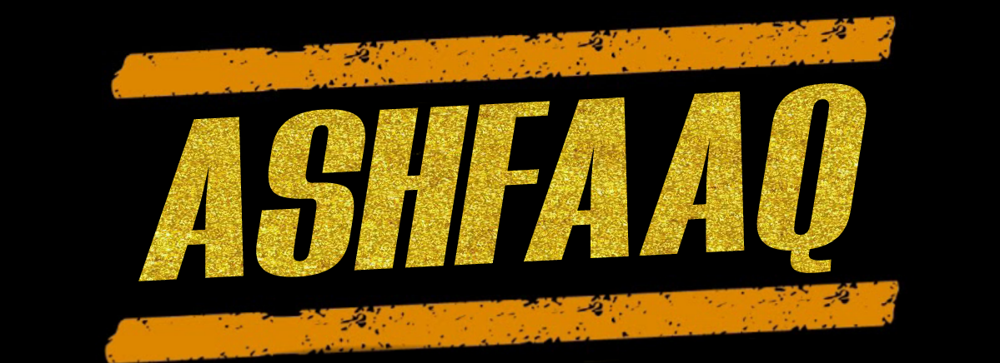

As the largest, private sector, higher education network in Sri Lanka with 40 centres island-wide, ESOFT creates opportunities for over 30,000 students every year. Since our inception in 2000, we have built a solid reputation for drlivering high quality and affordable academic programmes ranging from certificate to postgraduate level, across a variety of disiplines including Computing, Business, Hospitality, Engineering, Language Training and Personal and Professional Development. ESOFT is also looking to expand internationally and recently established our first oversaes branch in Bangladesh.
Copywrite © 2021 Ashfaaq Rifath
@ashfaaq16
ado Kaveesha moko balanne
i am Bucket sing
